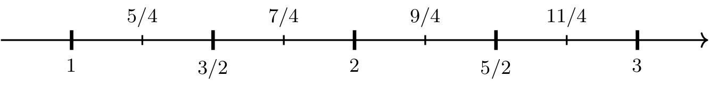

Riemann Sums and the Definite Integral
Contents
Riemann Sums and the Definite Integral#
Area Under a Curve and Riemann Sums#
Consider trying to compute the area of a region (below left) between the graph of \(y=f(x)\) and the \(x\)-axis on the interval \([a,b]\).
Long Text Description
There are two images, one to the left and one to the right. In both, there is a horizontal x-axis. On the left, the x-axis has the points a and b marked. On the right, the points a, x one, x two, x three, x four, and b are marked. The graph of the function f(x) is plotted above the axis in each picture. On the left, the area below the graph of f(x), above the x-axis, and between x=a and x=b is shaded yellow. On the right, there are four yellow rectangles of equal width, the bottoms of which break up [a,b] into four subintervals. The first rectangle has lower left hand corner a, contains the point x one, and has height f of x one. The second rectangle contains the point x two and has heigh f of x two. The third rectangle contains the point x three and has height f of x three. The fourth rectangle contains the point x four, has height f of x four, and has lower right hand corner b.
A Riemann sum uses rectangles (above right) to approximate the desired area in the following manner. Start by selecting a value for \(n\), which is the number of rectangles. Then break up the interval \([a,b]\) into \(n\) subintervals, each having width \(\Delta x = (b-a)/n\). Each subinterval corresponds to the base of a rectangle where \(\Delta x\) is the width of the rectangle. Next, pick one value, \(x_i\), from each subinterval, and evaluate \(f(x_i)\) to determine the height of the corresponding rectangle.
The total area of the \(n\) rectangles is given by
which is called a Riemann Sum. It approximates the area of the region between the graph of \(y=f(x)\) and the \(x\)-axis on the interval \([a,b]\).
Here are several different ways to select the values \(x_1,\ldots,x_n\).
Right Riemann Sum: \(x_1,\ldots, x_n\) are the right endpoints of the \(n\) subintervals.
Left Riemann Sum: \(x_1,\ldots, x_n\) are the left endpoints of the \(n\) subintervals.
Midpoint Rule: \(x_1,\ldots, x_n\) are the midpoints of the \(n\) subintervals.
In general, a Riemann sum approximates the value of a definite integral (see below).
The Limit Definition of a Definite Integral#
Definition
Suppose \(f\) is a continuous function on \([a,b]\). The definite integral of \(f\) from \(a\) to \(b\), denoted by \(\int_a^b f(x) ~dx\), is defined as
where the values of \(x_1,x_2,\ldots, x_n\) are chosen from the \(n\) subintervals of \([a,b]\) of equal width \(\Delta x = \dfrac{b-a}{n}\).
The values \(a\) and \(b\) are referred to as limits of integration.
Geometric Interpretation of the Definite Integral#
If \(f(x)\geq 0\) is continuous on \([a,b]\), then \(\int_a^b f(x) ~dx\) is equal to the area of the region between the graph of \(f\) and the \(x\)-axis on \([a,b]\).
{kind=link}
Long Text Description
There is a horizontal x axis with the points a and b labeled. There is a curve, y = f(x), which increases and decreases and changes concavity, but always remains positive, plotted above this axis. The region bounded by x=a on the left, x=b on the left, the x axis on the bottom, and y = f(x) on top is shaded yellow and labeled “Area = integral of f(x) with respect to x from a to b”.
In general, \(\int_a^b f(x) ~dx\) can be interpreted as the area of the regions that are below the graph of \(f\) and above the \(x\)-axis minus the area of the regions that are below the \(x\)-axis and above the graph of \(f\).
{kind=link}
Long Text Description
There is a horizontal x axis with the points a and b labeled. There is a curve y = f(x) plotted on this axis. This curve increases and decreases, has two zeroes, is negative between them, and positive outside of them. It’s concavity is up when it is negative, and down when it is positive. The Region to the right of x=a, above the x-axis, and below the curve is labeled R One. The region below the x axis and above the curve is labeled R Two. The region above the x axis, below the curve, and to the left of x=b is labeled R three.
Properties of the Definite Integral#
Properties of the Definite Integral
If \(f\) and \(g\) are continuous on \([a,b]\) and \(c\) is a constant, then
\(\displaystyle \int_a^a f(x) ~dx = 0\)
\(\displaystyle \int_a^b f(x) ~dx = -\int_b^af(x) ~dx\)
\(\displaystyle \int_a^b cf(x) ~dx = c\int_a^b f(x) ~dx\)
\(\displaystyle \int_a^b f(x) \pm g(x) ~dx = \int_a^b f(x) ~dx \pm \int_a^b g(x) ~dx\)
\(\displaystyle \int_a^b f(x) ~dx = \int_a^c f(x) ~dx + \int_c^b f(x) ~dx\)
Example 1#
Computing Riemann sums
Use a right Riemann sum, left Riemann sum, and midpoint rule to approximate the area under the graph of \(y=x^2\) on \([1,3]\) using 4 subintervals.
Step 1: Find the length of each interval, \(\Delta x\), and break up \([1,3]\) into 4 subintervals of length \(\Delta x\).
The endpoints of the subintervals are labeled below the number line while the midpoints of each subinterval are labeled above the number line. Each midpoint is calculated by computing the average of the two endpoints of the corresponding subinterval.
{kind=link}
Long Text Description
A number line beginning at one on the left, with large notches marking intervals of one half unit in length, and smaller notches marking an interval of one quarter unit length halfway between the larger notches, ending with three on the right.
Step 2: Use a right Riemann sum to approximate the area.

Therefore, the area under the graph of \(y=x^2\) on \([1,3]\) is approximately \(43/4 = 10.75\).
Long Text Description
There is an x axis with the points three over two, two, five over two, and three labeled. There is an increasing, concave up curve plotted above the x axis. There is a yellow rectangle with its right hand bottom corner at each labeled point, and its right hand top corner meeting the point on the curve directly above the labeled point. The rectangles each have base length 1/2.
Step 3: Use a left Riemann sum to approximate the area.
{kind=link}
Therefore, the area under the graph of \(y=x^2\) on \([1,3]\) is approximately \(27/4 = 6.75\).
Long Text Description
There is an x axis with the points one, three over two, two, and five over two labeled. There is an increasing, concave up curve plotted above the x axis. There is a yellow rectangle with its left hand bottom corner at each labeled point, and its left hand top corner meeting the point on the curve directly above the labeled point. The rectangles each have base length 1/2.
Step 4: Use the midpoint rule to approximate the area.
{kind=link}
Therefore, the area under the graph of \(y=x^2\) on \([1,3]\) is approximately \(69/8 = 8.625\).
Long Text Description
There is an x axis with the points five over four, seven over four, nine over four, and eleven over four labeled. There is an increasing, concave up curve plotted above the x axis. There is a yellow rectangle with its bottom center at each labeled point, and its top center meeting the point on the curve directly above the labeled point, with bases of length 1/2 each along the x-axis.